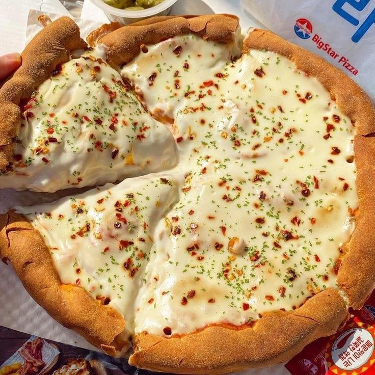
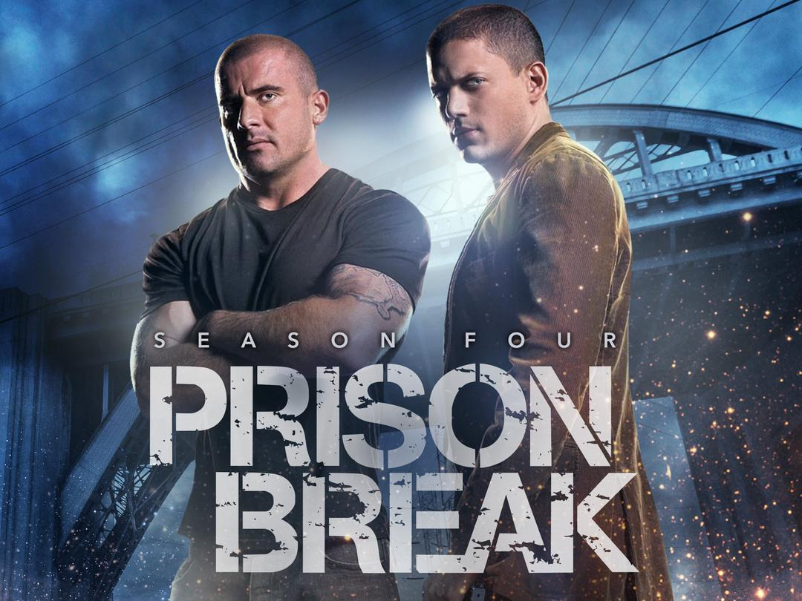
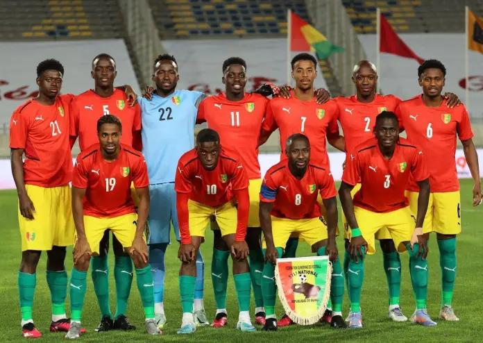

Après mon parcours universitaire à Gamal Abdel Nasser j'ai opté à suivre une formation , front-End chez Nimba Hub: .
Voir par toi même|  |
Une pizzaLa pizza est un plat emblématique originaire d'Italie, réputé pour sa simplicité er ses ingrédients frais. |
|  |
Prison breakPrison break est une série télévisée americaine créée par paul scheunring. La série suit l'histoire de michael Scolfied, un ingénieur en génie civil brillant qui se fait incarcérer volontairement dans la prison de de Fox River pour aider son frère , Lilcoln Burrows, condamné à mort pour un crime qu'il n'a pas commis. |
|  |
Sily NationalLe sily National est la première equipe du football guinéen |